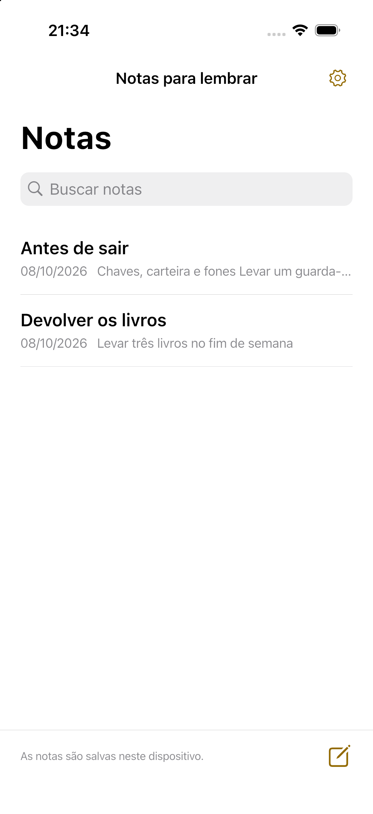

Suas notas importantes na tela inicial.
Um bloco de notas simples e rápido. Coloque só as notas necessárias na tela inicial, com texto fácil de ler.
Veja como funcionaiPhone / Android · Em breve

Escreva. Escolha. Tenha à vista.
Abra uma nota e escreva. As alterações são salvas automaticamente.
Toque em Adicionar à tela inicial em uma nota e siga as instruções do dispositivo para adicionar o widget.
Toque na nota para abrir o editor.
Simples de escrever. Fácil de ler.
Três tamanhos de texto
Normal, grande e muito grande. Toque em uma nota longa para ler tudo.
Notas sempre à mão
Sem conta. As notas ficam no dispositivo e podem ser restauradas por 30 dias após a exclusão.
Dez idiomas
Japonês, inglês, coreano, chinês simplificado e tradicional, espanhol, francês, alemão, italiano e português do Brasil.
Política de privacidade
Texto, datas e preferências de exibição, exclusão e idioma ficam no dispositivo. Não enviamos notas a servidores ou ao SDK de anúncios e não usamos SDK de análise.
Política de privacidadePublicidade
O aplicativo gratuito foi planejado para exibir um banner abaixo da lista. Sem anúncios no editor ou nos widgets. As notas funcionam mesmo se o anúncio não carregar.